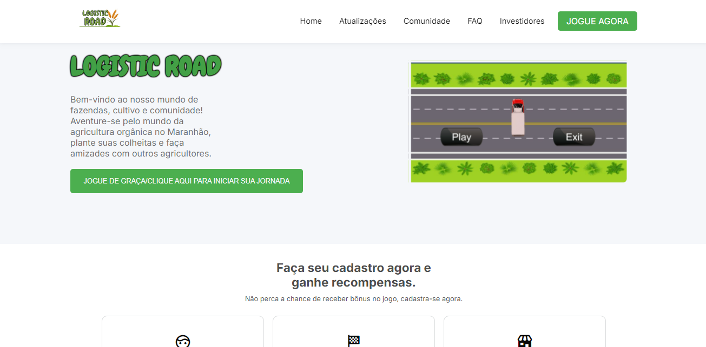
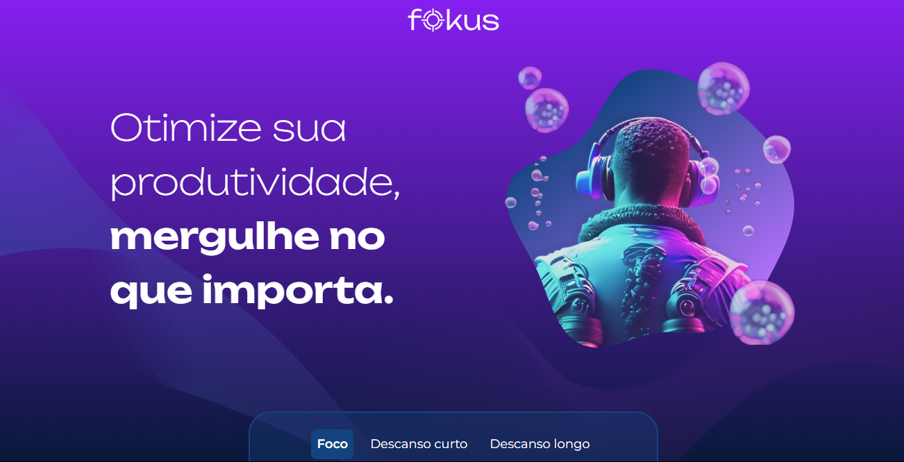

Sobre:
Como último desafio do Programa Inova Maranhão, nossa equipe de 10 membros desenvolveu o jogo "LOGISTIC ROAD", que visa
facilitar a conexão entre produtores e consumidores. Além disso, criamos uma landing page para o cadastro de novos
jogadores. O tema fornecido pelos instrutores foi “Conexão dos Produtores de Orgânicos a Consumidores”. O Maranhão, um
grande produtor rural, enfrenta desafios significativos para que seus produtos cheguem ao consumidor final, incluindo
questões estruturais, logísticas e econômicas.
Clique aqui para ver o projeto
Clique aqui para ver o projeto no GitHub
html
css
js

Sobre:
Este projeto de To-Do List foi desenvolvido durante o desafio do Programa Trilhas - Inova Maranhão
para demonstrar o que aprendemos durante o programa.
A aplicação web de gerenciamento de tarefas (To-Do List) foi construída com React, TypeScript e CSS. Ela permite que você adicione, edite, conclua e remova tarefas facilmente. Quando uma tarefa é concluída, ela é movida para uma seção específica e pode ser retornada à lista principal se necessário. O projeto também inclui alertas animados que informam sobre a criação, edição, conclusão e remoção de tarefas, garantindo uma experiência do usuário agradável.
Clique aqui para ver o projeto
Clique aqui para ver o projeto no GitHub
React
TypeScript
CSS
LocalStorage

Sobre:
Fokus é uma página web que facilita a organização do dia a dia. Com ela, você pode gerenciar
suas tarefas, definir prioridades e acompanhar o progresso, tudo de forma simples e eficiente.
A interface é fácil de usar, e o design se adapta a qualquer dispositivo, ajudando você a se
concentrar no que realmente importa.
Clique aqui para ver o projeto
Clique aqui para ver o projeto no GitHub
Html
css
javaScript

Sobre:
MarcosKBank é uma página web desenvolvida para simular um banco online. O projeto inclui funcionalidades como criação de contas e verificação por foto. Além disso, oferece uma interface intuitiva para que os usuários possam realizar operações bancárias de forma segura e conveniente. Durante o desenvolvimento, foram implementadas técnicas avançadas de validação de dados e autenticação de usuários para garantir a segurança.
Clique aqui para ver o projeto
Clique aqui para ver o projeto no GitHub
Html
css
javaScript